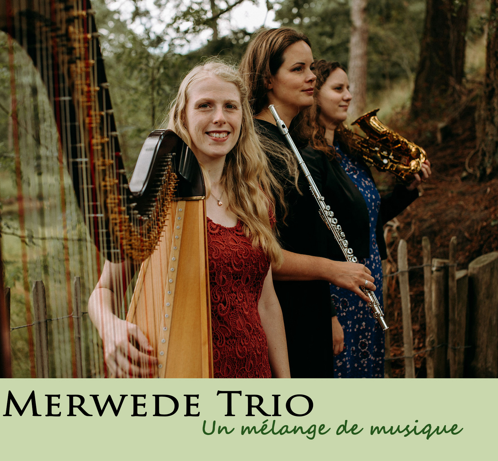

"Ik vond het altijd erg leuk als we naast liedjes uit mijn gewone lesboek ook liedjes uit 'Het Muzikale Alfabet' lesboek gingen doen.
Ik moest vaak lachen als mijn docent (Els van der Weij, dus ook de bedenker van dit lesboek) mij weer een nieuw liedje liet zien of horen. Yogaënd saxofoon spelen? De zee na doen met je saxofoon??
Dit lesboek heeft eigenlijk alleen maar liedjes die het saxofoonspelen niet saai maakt. Ik heb ook echt gemerkt dat ik veel geleerd heb van dit boek, vooral veel technieken. Het was echt een heel leuk lesboek om uit te spelen."
(Gertine, leerling)

Met prachtige illustraties van Els haar zus Annemieke!
Te bestellen als PDF of hardcopy bij uitgeverij Edition Matching Arts.
De boeken zijn ook verkrijgbaar bij Harry Bakker Saxofoons in Muiderberg en bij Adams in Ittervoort.
Een bijzondere verzameling werken voor een bijzondere bezetting gearrangeerd en/of gecomponeerd. Muziek van Monteverdi, de Machaut, Sweelinck, Berlioz, Shostakovich en Le Mair.
Luister hier naar het Merwede Trio.
Prijs: €15,- excl. verzendkosten.
Stuur een e-mail om te bestellen!
www.merwedetrio.nl
Trio Nebula (overgegaan in Nebula Ensemble) brengt op deze CD uitsluitend voor hen gecomponeerde werken ten gehore.
Hun missie: nieuwe muziek toegankelijk maken voor een breed publiek.
Met werken van Zwicki, van der Linden, Houtkamp en Monrad.